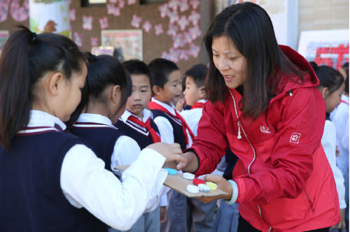

毕彦超
- 职称：教授、博士生导师
- 研究领域：
- 电话：（8610）58802911
- 通讯地址：北京师范大学京师大厦9418室
- 邮编：100875
- 电子邮件：ybi@bnu.edu.cn
- 课题组网址：http://brain.bnu.edu/home/yanchaobi/
2004年6月进入北师大心理学博士后流动站，出站后到北师大教育学院职业技术教育学科工作 曾在教育部职成司借调筹备05全国职业教育工作会议文件 2008年1月开始在河北省教育厅支持下到国家级重点中专石家庄铁路运输学校、鹿泉职教中心挂职校长助理和副校长。
1.2005年“联校教育及社会科学应用研究论文奖计划”十周年优秀成果奖。
2.当选《职业技术教育》杂志评出的十大2007职业教育年度入围人物。
3.荣获2009年第十一届全国职业教育优秀论文评选一等奖。
4.获得过中国博士后科学基金和香港联校教育社会科学应用研究论文奖等多项奖励。
1.2005年“联校教育及社会科学应用研究论文奖计划”十周年优秀成果奖。
2.当选《职业技术教育》杂志评出的十大2007职业教育年度入围人物。
3.荣获2009年第十一届全国职业教育优秀论文评选一等奖。
4.获得过中国博士后科学基金和香港联校教育社会科学应用研究论文奖等多项奖励。